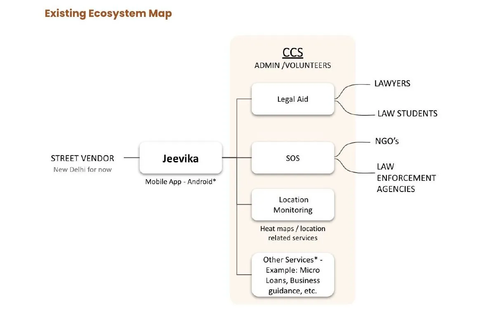
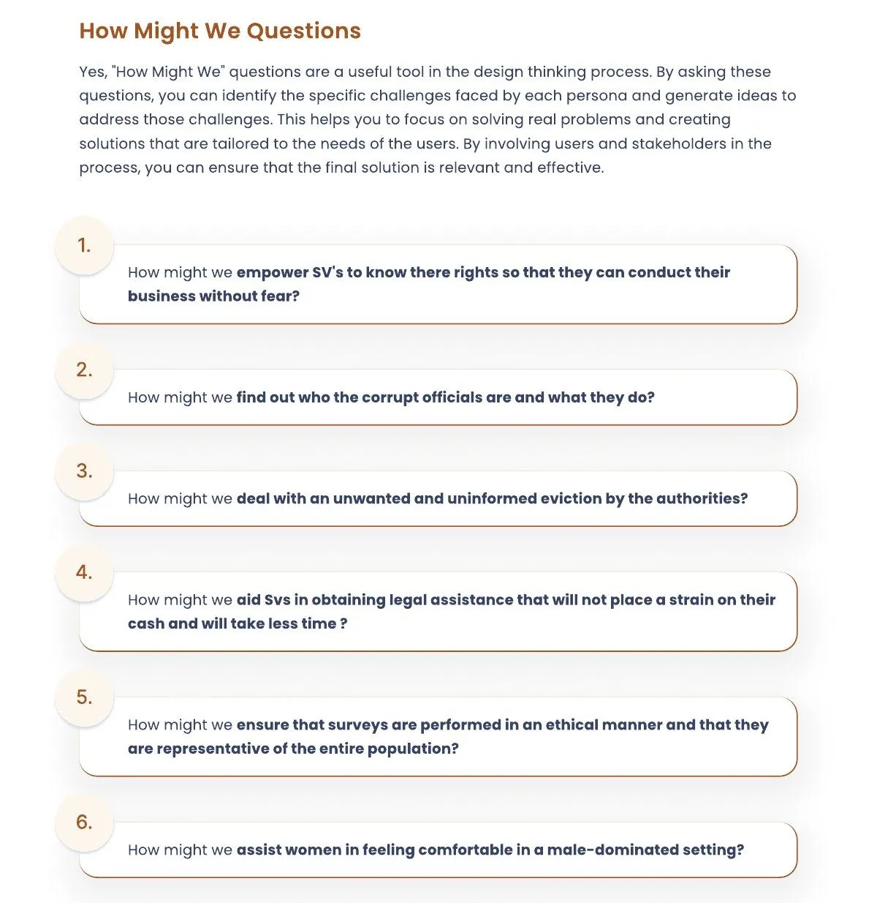
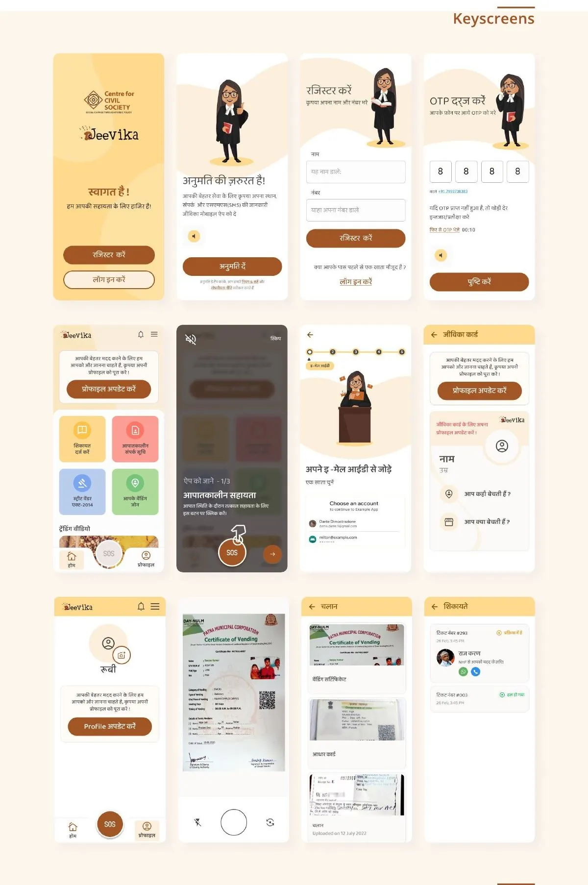
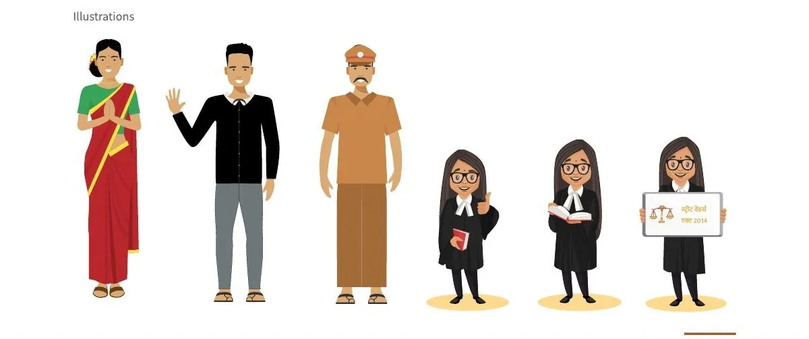
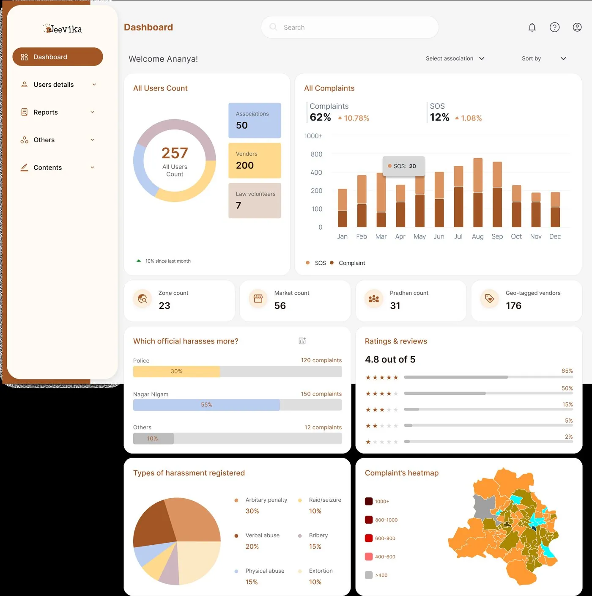
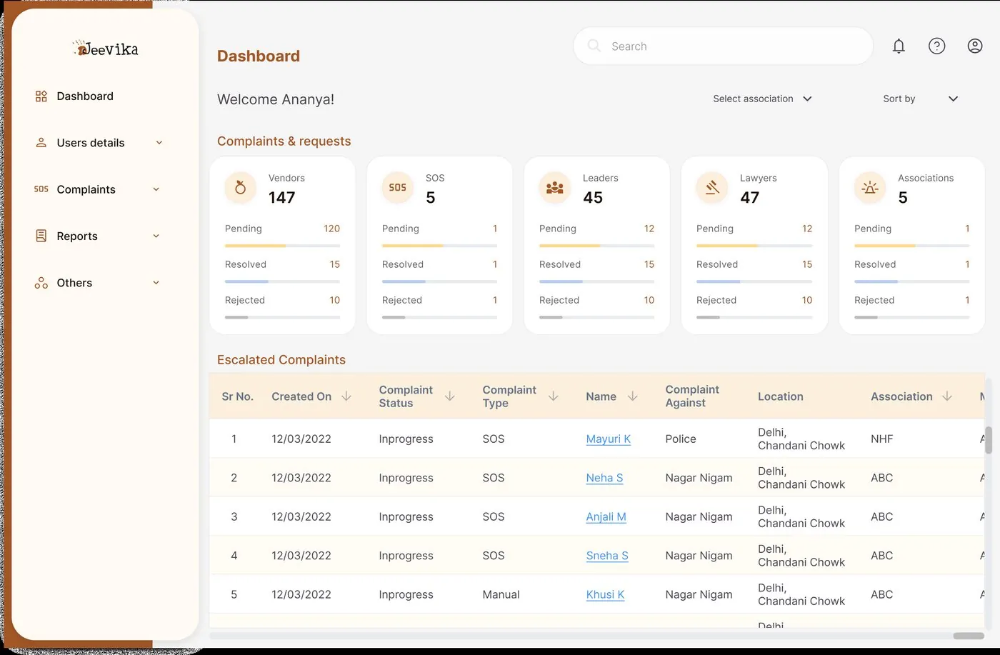
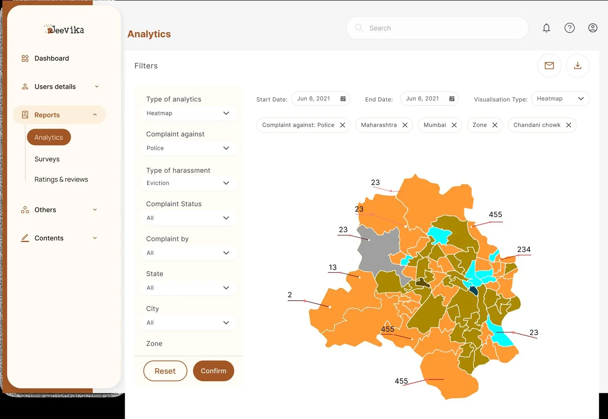

The short version
Legal help for Delhi’s street vendors, in the Hindi they speak.
- Problem Vendors don’t know their rights under the 2014 Street Vendors Act, and have no one to call when they’re harassed or evicted.
- Users They read Hindi, often not fluently. Many are new to smartphones and some don’t own one.
- Brief An app for rights, legal help and SOS, for CCS, a policy NGO.
- Outcome The vendor app and the CCS dashboard are both live.
My part I led UX with one junior designer, turned CCS’s interview data into personas and ran the alignment workshop.
What made it hard
- Reading was the real barrier. Vendors were willing to use an app, but a screen full of text, even in Hindi, would lose most of them.
- Not everyone has a smartphone, so the service had to work for vendors with no app at all.
- The government apps they knew felt cold: forms, little language support, and no way to ask a question. We looked at legal-help apps (Hawkers, Nyaya Bandhu, Talika, LegalKart) and public services (NASVI, PM SVANidhi, DigiLocker) to see this first hand.
- Two very different people would open it for different reasons. An experienced vendor-activist wants to help others. A newer vendor, a working mother, just wants to avoid trouble and keep her income safe.
How my thinking changed along the way
Standard Hindi wasn’t enough
We started with standard Hindi, the version that works across north India. But vendors read the words they use every day much faster than formal ones, so we switched to the everyday Delhi register, kept English as an option, and paired every action with an icon. The cost: every screen and illustration has to be localised again before Jeevika can move to another city. We chose that knowingly.
Forms became people
Instead of the form-heavy look of public apps, each section is introduced by an illustrated character: vendors, lawyers and police, drawn to look like the people users meet every day.
One app, two reasons to open it
We put self-help first (rights, SOS and “my cases”), because that’s what the newer vendor needs in a bad moment. The community and lawyer features sit one level down for the activist.
Fast vs. safe, for SOS
Harassment happens in the moment, so SOS sits on the home screen. But a single tap could fire from a phone in a pocket, so the button opens a full-screen SOS page to confirm. One extra tap in an emergency, in exchange for no false alarms. Vendors without the app get a toll-free number.
What we left out, on purpose
We turned six “How might we” questions into a long list of ideas, then ranked each one by how much it would help a vendor and how hard it was to build. Rights information, legal-aid requests, SOS and geo-tagging made the first release, because they protect a vendor in the moment and build the record they’ll need later. Broader monitoring and community features waited.


What vendors see


What happened after launch
The app went live, and street vendors are using it and slowly getting more comfortable. A live app also created a second set of users: the people running it.
The admin panel
Right after delivery, the same two-person team designed the admin panel for CCS and vendor associations: where harassment happens, complaints that need escalating, and running the programme zone by zone.
We mapped every job for two admin roles, a CCS admin and an association admin, as a story map, and marked what belonged in release 1. That panel is live too.
Onboard users
Onboard association admins, CCS admins and lawyersVerify submitted dataEnable or disable accessHelp recover accountsAssign law volunteers to zonesUsers and locations
Overview of all users and their latest updatesVendor, lawyer and association recordsTop-performing leadersActive usersZones, wards and marketsAnalytics
Harassment heatmapsGeo-tagged vendor hotspotsCOV / LOR statusThird-party survey dataPoll resultsReports
Filter data into reportsHarassment reportsShare dataComplaints
All complaints, SOS or directSOS incidents onlyComplaints from leaders or POCsFilter and track statusActions
Escalate to law volunteersEscalate to associationsProduct settings
Daily or weekly polls for vendorsOnboarding questionsAbout, terms, privacy, FAQs, supportTrending videosEmergency contacts per zoneZone and access managementWhite-label logo, theme and contentComplaint rules
Report remindersWhen an escalation triggersWho receives it, and at which level


What didn’t go to plan
The hardest problem turned out not to be the interface. Pressure from officials makes some vendors afraid to use the app at all. Good design gets a vendor through the screens, but it can’t make them feel safe standing up for their rights. That’s the next problem to solve, and it’s bigger than UI.
We also haven’t yet run usability tests with vendors on the live app.
What I’d do next
Test with vendors on the live app, then rework the UI around what we learn, especially around giving them the confidence to use it.